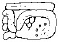
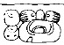
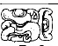

| A1 | Distance Number: [9] K'ins) | |
| B1 | Distance Number continued: 4 Winals | |
| A2 | u-ti-ya? | |
| B2 | Tzolk'in: 6 Ahaw | |
| C1 | Haab: 13 Mak | |
| D1 |  | 5-tun |
| C2 | i u-ti "and then it happened" | |
| D2 | Tzolk'in: 4 Muluk | |
| E1 | |
Haab: 2 K'umk'u |
| F1 | hu-bi-yi "was thrown down" | |
| E2 | u-to-k'a "his flint" | |
| F2 | u(?)-PAKAL-la "his(?) shield" | |
| G1 |  | la-ma |
| H1 | na(?)-aj(?) | |
| G2 | K'awiil | |
| H2 | u KAB'-hi "he caused it to be done" | |
| I1 | b'a-la-ha | |
| J1 |  | CHAN-na |
| I2 | K'awiil | |
| J2 | ???? | |
| K1 | b'a-te "warrior" | |
| L1 | pi-tzi "ballplayer" | |
| K2 | u-???-K'inich | |
| L2 | K'uhul Mutul Ahaw "Holy Lord of Mutul" | |
| M1 | ya-AHAW-wa "the (vassal) lord of" | |
| N1 | Yuk'noom | |
| M2 | Ch'een(?) | |
| N2 | K'uhuul Kan Ahaw "Holy lord of Calakmul" |